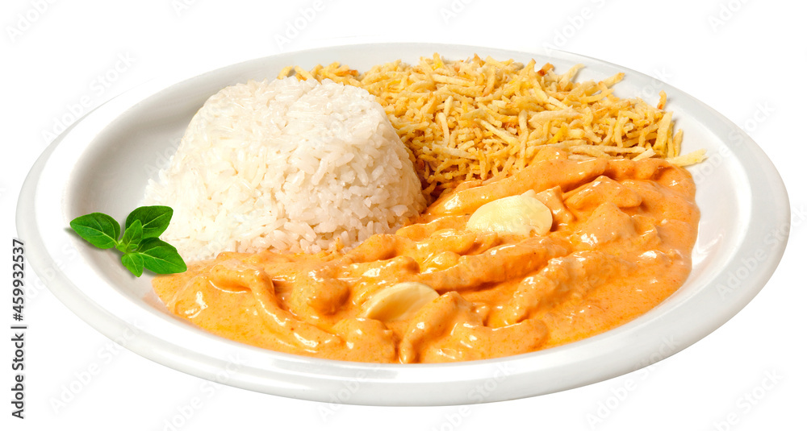

Strogonoff de Frango
Uma receita clássica brasileira, feita com peito de frango, creme de leite, ketchup e mostarda. Simples, rápida e irresistível!
Receitas
Descubra receitas simples, práticas e cheias de sabor para o seu dia a dia.
- Omelete de Forno: rápido e leve.
- Strogonoff de Frango: clássico brasileiro.
- Bolo de Caneca: sobremesa em 3 minutos.
Strogonoff de Frango
Uma receita clássica brasileira, feita com peito de frango, creme de leite, ketchup e mostarda. Simples, rápida e irresistível!